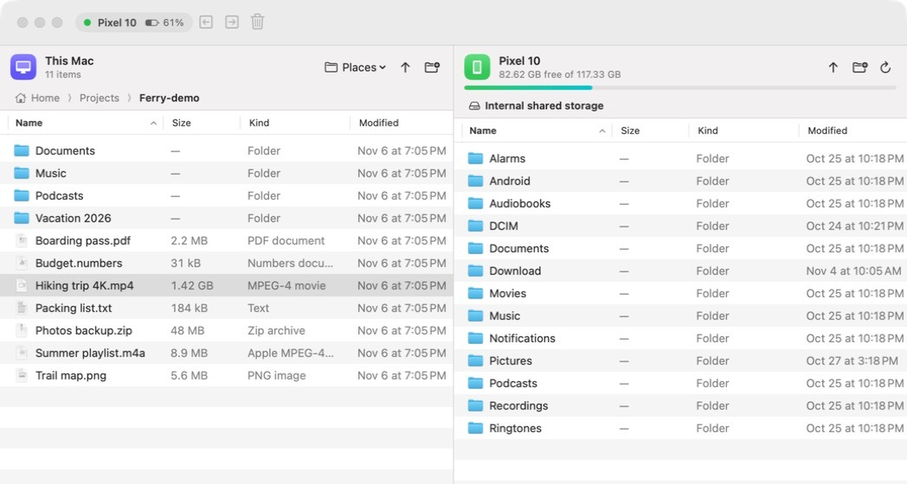
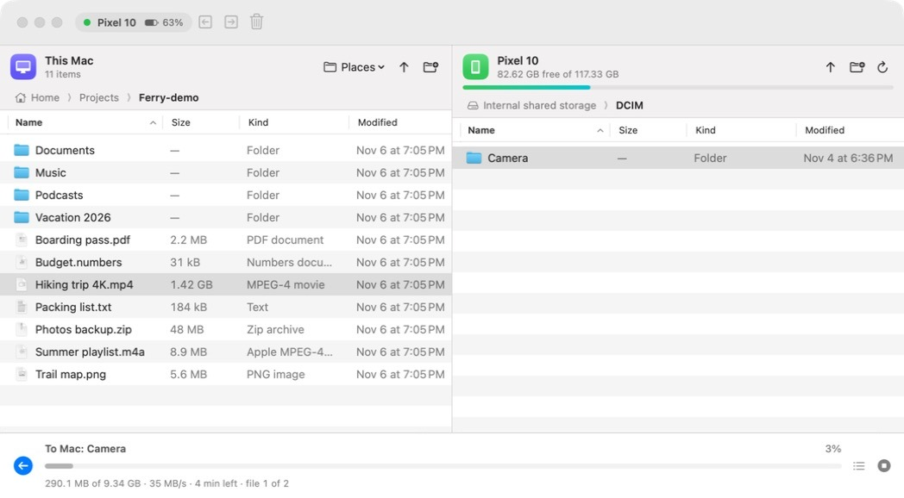

Ferry is a fast, native file transfer app for Android phones. Plug in, drag across, done. Free and open source.
macOS 14 Sonoma or later · Apple silicon · MIT licensed

macOS doesn't speak MTP, the protocol Android phones use over USB. Ferry fills the gap with a small app that feels like it came with your Mac.
Built in SwiftUI. No Electron, no bundled browser. Opens instantly and stays out of the way.
Your Mac on the left, your phone on the right. Drag between them, or drop straight from Finder.
Copies files over 4 GB and entire folder trees, and keeps their modified dates.
Live speed, time remaining and file count. Queue up several copies and cancel any of them.
Finds your phone the moment it's plugged in and reconnects if the cable wiggles loose.
Switch between internal storage and SD card, with free space and battery level always visible.
Ferry streams straight over USB with libmtp, the same engine trusted on Linux for years. Big phone videos move at full USB speed, with an honest progress bar the whole way.

Google's own app is discontinued. Ferry picks up where it left off.
| Ferry | Android File Transfer | Electron apps | |
|---|---|---|---|
| Native Mac app | Yes | Yes | No |
| Files over 4 GB | Yes | No | Yes |
| Mac and phone side by side | Yes | No | Yes |
| Still maintained | Yes | No | Varies |
| Free and open source | Yes | Free, closed | Varies |
Signed and notarized by Apple. No warnings, no Terminal.
brew install --cask walker123t/tap/ferry